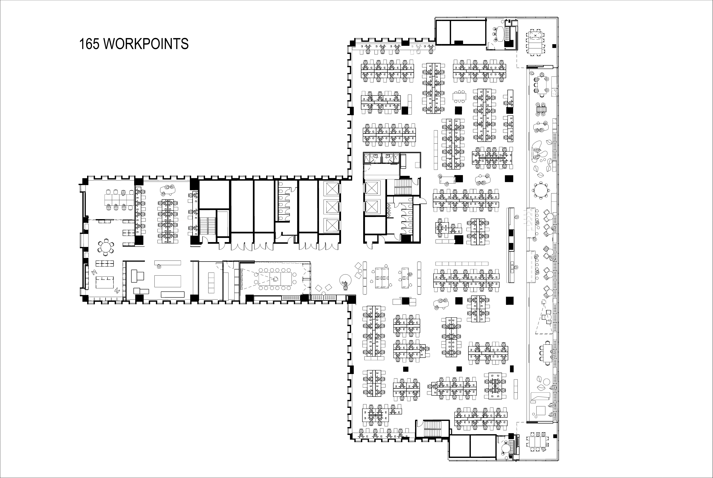
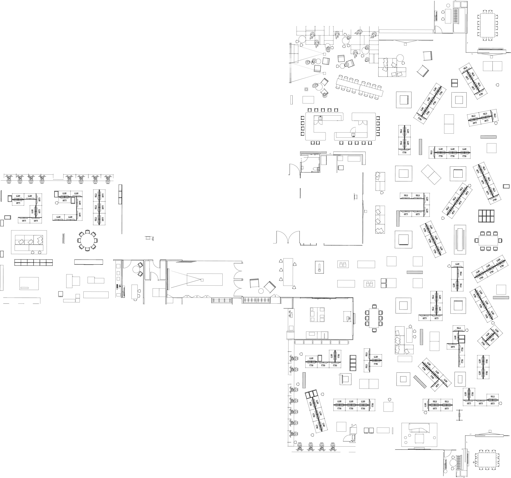

<head>
        <link rel="stylesheet" type="text/css" href="style.css">
        <script src="https://ajax.googleapis.com/ajax/libs/jquery/3.1.0/jquery.min.js"></script>
        <script src='https://cdnjs.cloudflare.com/ajax/libs/tabletop.js/1.5.1/tabletop.min.js'></script>
</head>


<body>
    <style>
        #slidecontainer {
            bottom: 0;
        }
        svg * {
            transition: opacity 1s;
        }
        .hidden {
            opacity: 0;
        }
    </style>
    
    <div id="slidecontainer">
        <input type="range" min="1" max="100" value="50" class="slider" id="myRange">
    </div>

    <svg xmlns:svg="http://www.w3.org/2000/svg" id="my-svg" version="1.1" baseProfile="full" width="500" height="500">
        <rect x="0" y="0" width="100" height="250" style="fill:lightblue"/>
        <circle cx="60" cy="60" r="50" style="fill:red"/>
    </svg>
</body>

<!-- <svg url(path.svg#c1)></svg> -->






<!-- Example clipping path code:

<svg width="100" height="100" >
    <defs>
      <clipPath id="myClip">
        <rect x="0" y="10" width="100" height="35" />
        <rect x="0" y="55" width="190" height="35" />
      </clipPath>
    </defs>
    <circle cx="50" cy="50" r="50" clip-path="url(#myClip)" />
  </svg>

-->